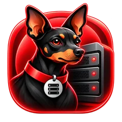
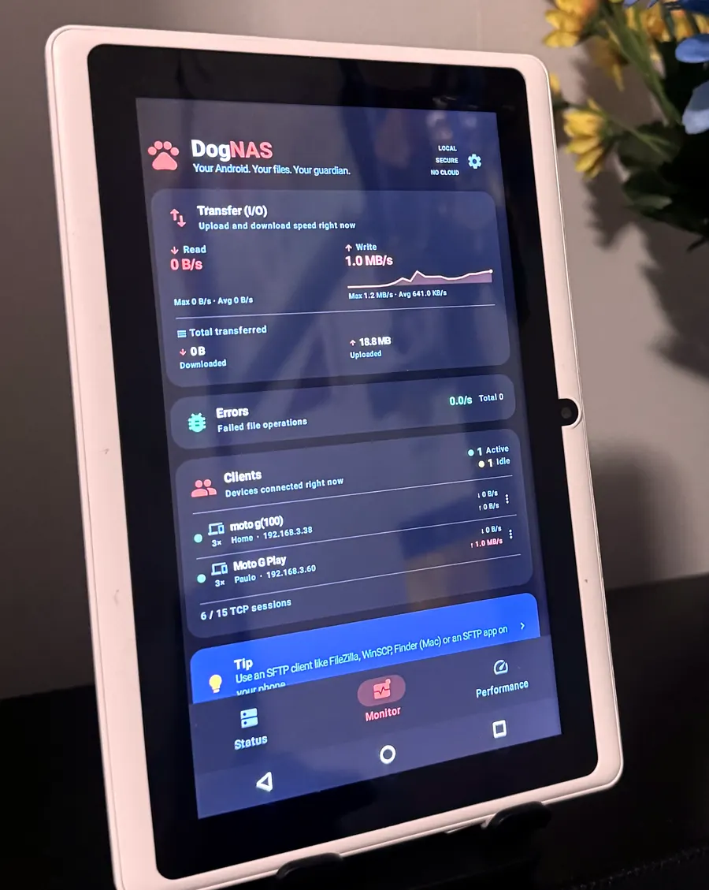
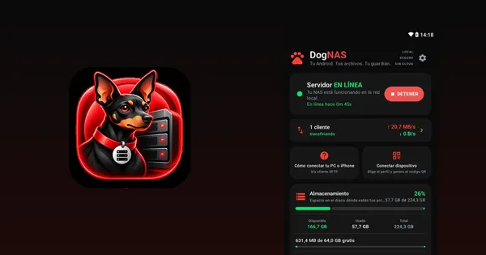
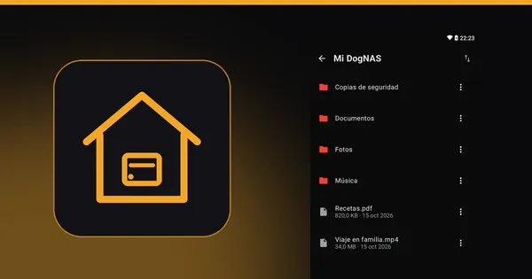
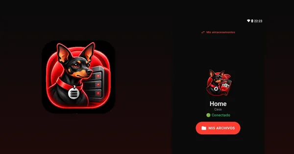
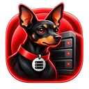
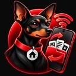

¡Tu Android! Tu almacenamiento privado.
Tu tableta o móvil Android compatible se convierte en un espacio para guardar y acceder a fotos, vídeos y documentos por Wi-Fi. Sin nube, sin cuotas mensuales y sin comprar un NAS.
- Usa un Android que ya tienes
- Conecta otros móviles con un código QR
- Empieza gratis, sin suscripción
Consulta los requisitos de compatibilidad antes de instalar.


Cómo funciona
Tres pasos, del servidor a tu primer archivo.
Enciende el servidor
Instala DogNAS en el Android que guardará los archivos — en el dispositivo, una tarjeta SD o un disco USB — y toca Iniciar.
Conecta tu teléfono
Genera el código QR de un perfil y escanéalo con DogNAS Client Lite. Cada perfil tiene su PIN y su espacio.

Usa tus archivos
Navega, sube y descarga por el Wi-Fi de casa. PC y Mac se conectan por SFTP.
¿Usas SFTP, homelab o automatización? Mira la sección para usuarios avanzados →
¿Listo para usar tu Android como almacenamiento?
Quiero instalarlo en mi Android ahoraBeneficios
Los problemas que DogNAS resuelve
En casa, en la oficina en casa o en tu casa inteligente, DogNAS acaba con molestias diarias usando un Android que ya tienes.
Uso doméstico
- El teléfono siempre lleno, sin espacio para fotos y videos.Envía fotos y videos a DogNAS por Wi-Fi y libera espacio en el teléfono. Mantén también una copia independiente de lo importante.
- Una suscripción de nube que no deja de subir.Usa el Android olvidado en un cajón: Gratis guarda hasta 64 GB y Pro es una compra única, sin suscripción.
- Fotos de la familia dispersas y guardadas en servidores ajenos.Todo en un solo lugar, dentro de casa: un perfil y un PIN para cada persona, sin nube y sin cuenta.
Oficina en casa
- Archivos de trabajo atrapados en memorias USB y en correos a ti mismo.Ábrelos desde el PC, el Mac, la tablet o el teléfono por la red: FileZilla, WinSCP, Cyberduck o DogNAS Client Lite.
- Un NAS tradicional es caro y difícil de configurar.Instala una app, toca Iniciar y vincula con un código QR y un PIN. Sin tocar el router.
- Documentos de clientes en una nube pública.Se quedan en tu red, cifrados en tránsito (SSH/SFTP), con una credencial por dispositivo que revocas cuando quieras.
Casa inteligente
- Grabaciones de cámaras atadas a la nube de pago del fabricante.Las cámaras y NVR que envían por SFTP graban directo en DogNAS, en tu red.
- Automatizaciones sin un lugar donde guardar archivos.Home Assistant, Node-RED, rclone y scripts envían y buscan archivos por SFTP.
- Un servidor que se detiene cuando se va la luz.El teléfono tiene su propia batería y, en Pro, DogNAS puede arrancar solo tras reiniciar (depende del dispositivo y de los permisos de Android).
Para tu casa
Tu Android viejo como almacenamiento de casa, por Wi-Fi
Ese teléfono olvidado en un cajón empieza a guardar las fotos, los videos y los documentos de todos. Los ves desde tu teléfono, en cualquier habitación, sin cables y sin pagar nube.
¡Libera espacio en tu teléfono!
Usa DogNAS Client Lite para enviar fotos y videos de tu teléfono a DogNAS, que los guarda en tu perfil. Antes de borrarlos del teléfono, comprueba que están en DogNAS y mantén una copia independiente de lo importante.
Un espacio para cada persona
Cada perfil tiene su PIN y sus carpetas. Nadie ve los archivos de los demás.
Fácil de conectar
Usa DogNAS Client Lite para conectarte a tu servidor DogNAS: apunta la cámara al código QR, escribe el PIN y listo.
Sin nube y sin cuotas
Tus archivos se guardan en el almacenamiento de tu Android DogNAS, accesibles por el Wi-Fi de tu casa. Sin cuenta, sin anuncios, sin cobros mensuales. Usa todo el espacio del dispositivo: 32, 64, 128, 256 GB y más (más de 64 GB con DogNAS Pro).
Sigue todo


Privacidad y control
Tus archivos se quedan contigo
DogNAS no tiene nube: el acceso ocurre entre tus propios dispositivos, en tu red.
Almacenamiento tuyo
Los archivos se guardan en el almacenamiento que elegiste en el dispositivo servidor: memoria interna, tarjeta SD o disco USB.
Conexión cifrada
El acceso usa SFTP sobre SSH-2 y el servidor se fija al vincular. Está pensado para la misma red Wi-Fi; el acceso desde fuera de casa no forma parte del producto hoy.
Un PIN por perfil
Cada perfil tiene su PIN y sus carpetas, y cada dispositivo vinculado tiene una credencial que puedes revocar cuando quieras.
Apps sin recolección
Las apps no recogen, no envían y no venden datos personales y no tienen anuncios. Este sitio solo usa Google Analytics si aceptas.
Tus archivos se guardan en el almacenamiento configurado en tu dispositivo servidor. El acceso depende de la configuración de tu red y de las credenciales de DogNAS. Para archivos importantes, mantén una copia de respaldo independiente.
Gratis para empezar, Pro para ir más allá
Pruébalo en casa
Configura tu primer servidor y comprueba que el acceso a los archivos funciona: hasta 64 GB gestionados, el perfil Casa más 2 y 3 dispositivos vinculados.
Aprovecha todo el potencial de tu almacenamiento
Todo el espacio del dispositivo o del disco, perfiles y dispositivos ilimitados, subidas y descargas de la app cliente que continúan con la app cerrada, el servidor arrancando solo tras reiniciar (cuando Android lo permita) y máximo rendimiento.
| Gratis | Pro | |
|---|---|---|
| Almacenamiento | 64 GB | Todo el dispositivo |
| Perfiles | Casa + 2 | Ilimitados |
| Dispositivos vinculados | 3 | Ilimitados |
| Rendimiento | Bueno | Máximo optimizado |
| Transferencias de la app cliente, con la app cerrada | Se pausan | Continúan |
| Tras reiniciar | Toca para iniciar | Se inicia solo |
DogNAS Pro: compra única, sin suscripción. DogNAS Client Lite siempre es gratis.
Empieza gratis y míralo funcionar en casa.
Empezar hoy a usar mi Android como almacenamientoPara tecnología, casa inteligente y oficina
Un servidor SFTP en Android, siempre encendido
Un NAS ligero para casa u oficina: cualquier dispositivo, script o automatización que hable SFTP envía y recoge archivos por Wi-Fi.

NAS en casa o en la oficina
Carpetas por perfil, accesibles desde PC, Mac y Linux con FileZilla, WinSCP, Cyberduck, rclone o el sftp de OpenSSH.
Casa inteligente e IoT
Recibe archivos de cámaras y NVR que suben por SFTP, copias de seguridad de otros servidores y scripts de automatización (Home Assistant, Node-RED, cron).
Cifrado en tránsito
SSH-2 con AES-GCM o ChaCha20, la clave del servidor fijada al vincular y una credencial por dispositivo, revocable en cualquier momento.
Pensado para estar encendido
Guarda en la memoria interna, en una tarjeta SD o en un disco o pendrive USB. Con Pro puede arrancar solo tras reiniciar. Algunos fabricantes limitan las apps en segundo plano: consulta los requisitos.
Productividad en la oficina
Ideal para quien trabaja con fotos, videos y documentos y necesita organizarlo todo: los archivos quedan accesibles desde el PC, la tableta y el smartphone, sin pendrives ni cables. DogNAS es toda la facilidad por tu Wi-Fi.
Especificaciones
| Protocolo | SFTP sobre SSH-2 |
|---|---|
| Autenticación | Usuario y contraseña — una credencial por dispositivo, revocable |
| Almacenamiento | Memoria interna, tarjeta SD, disco o pendrive USB |
| Clientes | DogNAS Client Lite, FileZilla, WinSCP, Cyberduck, rclone, OpenSSH y scripts |
| Requisitos | Android 7.0 o más reciente, en la misma red |
Para todos
Más espacio para tu DogNAS
¿Quieres más espacio? Conecta un SSD externo o incluso el disco duro que sacaste de tu portátil viejo. Cada disco es un almacenamiento independiente: DogNAS no junta varios discos en un solo volumen.

SSD externo
Conecta un SSD USB y gana espacio y velocidad para guardar todo lo de casa.
El disco del portátil viejo
Pon el disco que cambiaste del portátil en una carcasa USB y dale una nueva vida como almacenamiento de casa.
Tarjeta SD o pendrive
La forma más sencilla de ampliar el espacio del teléfono que se convirtió en servidor.
Varios DogNAS en casa
¿Tienes más de un Android olvidado? Cada uno puede ser un DogNAS; DogNAS Client Lite los muestra todos en “Mis almacenamientos”.
Los discos USB necesitan un teléfono con USB OTG. Los discos mecánicos pueden pedir más energía de la que da el teléfono: en ese caso, usa un hub USB con alimentación. En el plan Gratis, DogNAS gestiona hasta 64 GB; con Pro, el disco entero. Un solo disco puede fallar: mantén una copia independiente de tus archivos importantes.
Compatibilidad
Requisitos y límites
Android 7.0 o más reciente
En el servidor y en los móviles cliente, todos en la misma red Wi-Fi.
Discos USB
Necesitan USB OTG en el móvil servidor. Los discos mecánicos pueden pedir más energía de la que da el móvil: usa un hub USB con alimentación.
Servidor en primer plano
El servidor funciona como servicio en primer plano, con notificación fija, y sigue activo con la pantalla apagada y con la app cerrada. Aun así, Android y algunos fabricantes pueden detenerlo para ahorrar batería: si notas interrupciones, ajusta el ahorro de batería y los permisos de DogNAS.
Almacenamiento no es copia de seguridad
Un solo disco puede fallar. Mantén una copia independiente de los archivos importantes.
Preguntas frecuentes
¿Necesito comprar un dispositivo nuevo?
No necesariamente: puedes reutilizar un Android compatible (Android 7.0 o más reciente). Mira los requisitos arriba. Lee la guía: Cómo convertir un Android viejo en un servidor de archivos
¿Funciona en una tableta?
Sí. DogNAS funciona en cualquier Android compatible, móvil o tableta: una tableta olvidada en casa puede ser el servidor, y tus otros dispositivos acceden por Wi-Fi. Las pantallas de las apps están pensadas para móviles, pero funcionan en pantallas más grandes. Lee la guía: ¿Tablet vieja parada? Conviértela en almacenamiento del hogar
¿Necesito internet?
Para usarlo en casa solo necesitas la red Wi-Fi que conecta tus dispositivos; internet hace falta para instalar las apps. El acceso desde fuera de casa no forma parte del producto hoy. Lee la guía: Cómo transferir archivos entre la PC y el celular por Wi-Fi, sin cable
¿DogNAS envía mis archivos a la nube?
No. Los archivos se quedan en el almacenamiento del dispositivo servidor y viajan entre tus dispositivos, en tu red. Las apps no recogen datos personales; este sitio usa Google Analytics solo si aceptas.
¿Puedo usar un disco externo?
Sí, con un móvil que tenga USB OTG y un disco que Android reconozca. Los discos mecánicos pueden necesitar un hub USB con alimentación. Cada disco es un almacenamiento independiente. Lee la guía: Cómo reutilizar el disco de una laptop vieja como almacenamiento de la casa
¿El servidor sigue funcionando con la pantalla apagada o con la app cerrada?
Sí, en cualquier plan: el servidor funciona como servicio en primer plano, con una notificación fija (y botón Detener), y eso lo mantiene activo con la pantalla apagada y después de cerrar la app. Android o el fabricante aún pueden detenerlo para ahorrar batería: si notas interrupciones, ajusta los permisos y el ahorro de batería de DogNAS.
¿La pausa de las transferencias en el plan Gratis es del servidor?
No. Es un comportamiento de la app cliente, no del servidor. En el plan Gratis, las subidas y descargas de la app cliente se pausan cuando sales de la app cliente y se reanudan al volver; en Pro continúan en segundo plano. El servidor sigue funcionando en ambos casos.
¿Esto reemplaza una copia de seguridad?
No. Un solo disco o móvil puede fallar. Mantén una copia independiente de lo importante.
¿Puedo conectar varios servidores?
Sí. Cada DogNAS aparece como un destino independiente en «Mis almacenamientos» de la app cliente.
¿Varios discos se convierten en un solo volumen?
No. DogNAS no junta discos en un volumen (sin RAID ni dividir archivos entre discos): cada disco o dispositivo es un almacenamiento separado.
¿Cómo empiezo?
Instala DogNAS en el Android que guardará los archivos, toca Iniciar, genera el código QR de un perfil y escanéalo con la app cliente. Mira los tres pasos arriba. Lee la guía: Un NAS casero sin comprar un NAS: usa el Android que ya tienes
¿Sin más dudas? Pruébalo con tus propios archivos.
Instalar DogNAS gratisEn el blog
Guías prácticas para empezar y sacar más provecho de tu Android viejo.

Reutilizar un Android viejoCómo convertir un Android viejo en un servidor de archivos
Ese celular o tablet guardado en un cajón puede almacenar las fotos, los videos y los documentos de la casa por Wi-Fi, sin nube y sin mensualidad.

Comparar y decidirUn NAS casero sin comprar un NAS: usa el Android que ya tienes
Para guardar en casa las fotos, los videos y los documentos de la familia no siempre hace falta comprar un NAS. Mira cuándo basta un Android viejo y cuándo no.

Almacenamiento, fotos y privacidadCómo liberar espacio en el celular Android sin perder tus fotos
Limpia lo que sobra en Android y lleva fotos y videos a un lugar seguro fuera del celular, sin pagar mensualidad de nube.
Dudas y soporte
DogNAS está empezando y tu opinión ayuda a mejorarlo. Escríbenos si algo no funciona o falta.
Las apps

DogNAS
El servidor: instálalo en el Android que guardará los archivos.

DogNAS Client Lite
La app de acceso: instálala en tu teléfono para ver, subir y descargar archivos.
DogNAS Client
Nuevo: la app completa para Android y iPhone, próximamente.
Empieza por el servidor, gratis
Instala DogNAS en un Android compatible, conecta tu móvil con el código QR y pruébalo con tus propios archivos.
Consulta los requisitos de compatibilidad antes de instalar.